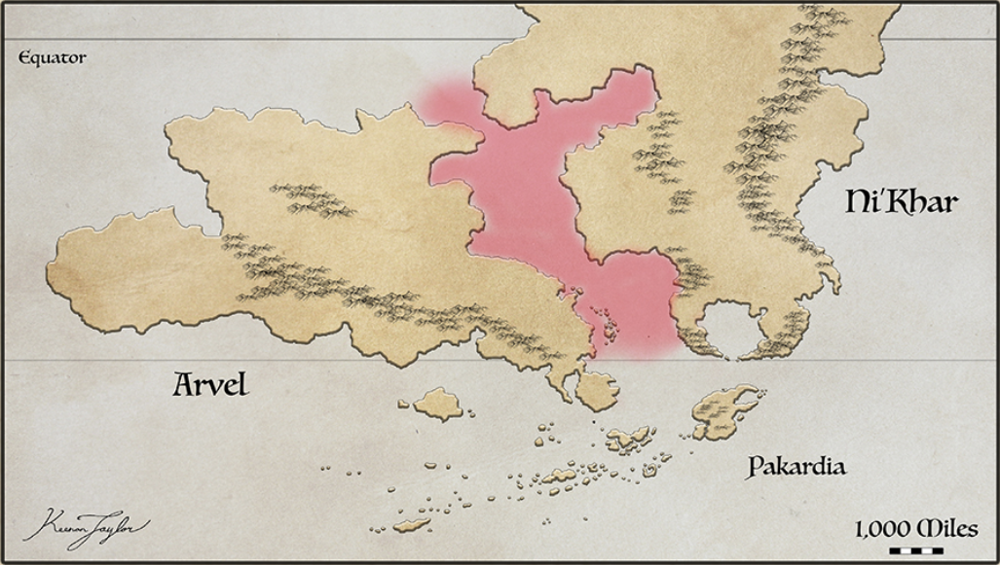
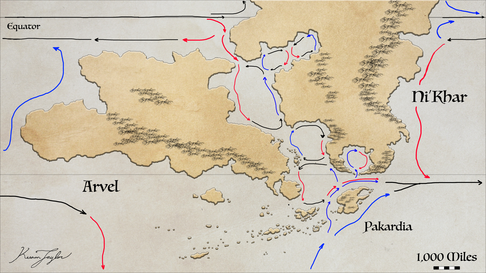
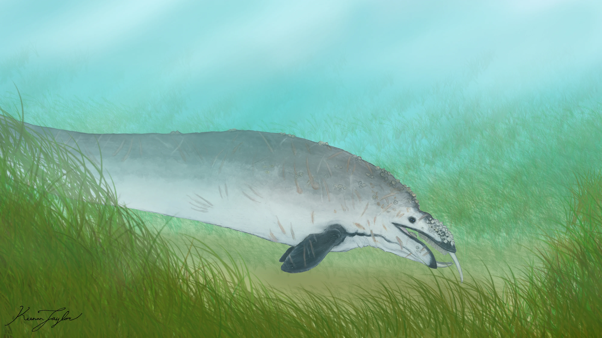
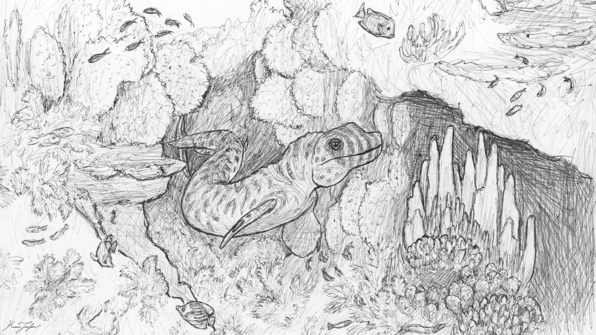

01 · INTRODUCTION
Overview

The Trakaiam Sea, known throughout the Known World simply as the Inland Sea or the Great Sloth Sea, constitutes the largest continuous shallow-water marine ecosystem presently documented on Kaimere and one of the most biologically productive marine environments known on the planet.
Occupying the broad tectonic depression separating eastern Arvel from southern Ni'Khar, the basin spans approximately 3,200 kilometers from north to south and nearly the same distance east to west, covering an area comparable to that of a terrestrial continent. Although immense in surface area, the overwhelming majority of the sea remains remarkably shallow. Outside the major erosional channels that traverse its floor, depths rarely exceed thirty meters, allowing sunlight to penetrate to the seabed across nearly the entire basin.
Unlike Earth's oceans, where biological production is concentrated along narrow continental shelves bordering abyssal plains, the Trakaiam Sea functions almost entirely as a single, uninterrupted continental shelf. Every square kilometer of its floor participates directly in photosynthetic production, creating a marine ecosystem whose productivity rivals that of tropical rainforests and whose ecological complexity has few analogues either on Earth or elsewhere on Kaimere.
Its geographic position at the heart of the Known World further magnifies its significance. The sea forms the climatic, ecological, and economic center of the region, separating yet simultaneously linking the continents of Arvel and Ni'Khar while opening southward toward the Great Khalin Sea and the wider oceans beyond.
Nearly every major river system of eastern Arvel and southern Ni'Khar ultimately drains into its waters, delivering immense quantities of dissolved nutrients, organic sediments, and freshwater. At the same time, multiple southern gateways and a northern inlet permit continuous exchange with surrounding oceans, ensuring that the basin never becomes isolated despite its enclosed appearance. The resulting circulation produces an exceptionally stable marine environment in which oceanic and coastal processes become inseparably intertwined.
The Trakaiam Sea exists within Kaimere's tropical and subtropical climatic belt, positioned immediately south of the equatorial atmospheric convergence zone. The greenhouse conditions that characterize the planet result in surface temperatures substantially exceeding those observed in modern terrestrial oceans. Whereas Earth's equatorial waters generally stabilize near 28°C (82°F), Trakaiam surface temperatures commonly remain between 32 and 35°C (90-95°F) throughout much of the year, particularly within its northern sectors bordering the equator. Seasonal variation is comparatively limited owing to Kaimere's atmospheric structure and the immense thermal inertia of the basin itself. Water temperatures rarely decline below 22°C even during the coolest periods, allowing biological activity to continue uninterrupted throughout the annual cycle. This remarkable thermal stability underlies nearly every aspect of the basin's ecology. Continuous warmth permits year-round photosynthesis, uninterrupted reproductive cycles, and sustained metabolic activity among organisms that would experience seasonal dormancy under terrestrial conditions.
Large reptiles, giant fishes, marine crocodilians, sharks, ammonites, cephalopods, and numerous invertebrates maintain active lifestyles throughout the year, while the basin's primary producers continue growing without experiencing winter dieback. Rather than exhibiting strong seasonal pulses of productivity, the Trakaiam ecosystem functions as a perpetually active biological engine whose fluctuations are driven primarily by hydrology, nutrient availability, and localized weather rather than annual climatic oscillation.
Although superficially calm, the Inland Sea is dynamically connected to the surrounding oceans through an intricate system of marine circulation. Warm oceanic water enters principally through the southern passages connecting to the Great Khalin Sea, while additional inflow arrives through the northern entrance bordering the tropical seas beyond Ni'Khar.
Prevailing trade winds drive broad westward surface circulation across much of the basin, while continental geometry, Coriolis forces, and localized density differences establish persistent gyres and countercurrents throughout the interior. These circulation patterns continuously redistribute heat, dissolved nutrients, planktonic organisms, and larval stages across thousands of kilometers, preventing long-term ecological isolation while maintaining distinct regional environments.
Unlike Earth's continental shelves, where tidal mixing often dominates coastal circulation, tidal influence within the Trakaiam Sea remains comparatively subdued. The partially enclosed geometry of the basin dissipates much of the tidal energy entering through its southern mouths, producing relatively weak tidal currents over most shallow regions. The absence of powerful tidal scouring allows exceptionally fine carbonate sediments and organic detritus to accumulate across vast portions of the seafloor. These stable sediments provide ideal substrates for the establishment of dense seagrass meadows whose extensive rhizome networks further stabilize the basin floor, reducing erosion and enhancing water clarity over geological timescales.
Bathymetrically, the Trakaiam Sea appears deceptively uniform. Across much of its expanse, the seabed forms an immense, gently undulating plain punctuated only occasionally by low carbonate ridges, ancient volcanic outcrops, or reef structures. This apparent simplicity is interrupted by one of the basin's defining geological features: the deep erosional systems collectively known as the Braided Rivers. These submerged channels descend to depths approaching three hundred meters and represent the only substantial bathymetric relief within the basin. Formed during periods of lower sea level and later modified through tectonic subsidence, they now function as the principal arteries of the Inland Sea, directing deep-water circulation while transporting nutrient-rich waters throughout the otherwise shallow ecosystem. The channels fundamentally alter regional oceanography. Dense, oxygen-rich waters entering from the surrounding oceans descend into these depressions before slowly rising along their margins through persistent upwelling. This mechanism continuously delivers phosphorus, nitrogen, trace minerals, and dissolved organic compounds back into the photic zone, sustaining biological productivity far beyond what riverine input alone could support. The Braided Rivers therefore function not merely as geological features but as the circulatory system of the Inland Sea, coupling deep-water nutrient reservoirs with the immense photosynthetic engine operating above.
The geological history responsible for this unique marine environment reflects millions of years of tectonic stabilization following the closing phases of the Tyrant Dynasty. Prior to formation of the modern basin, eastern Arvel and southern Ni'Khar were separated by an intricate mosaic of estuaries, shallow embayments, river deltas, and periodically connected marine basins. Continued crustal subsidence gradually merged these systems while simultaneously isolating them from broader oceanic influences. Extensive volcanic activity deposited thick ash sequences across the developing seabed, creating mineral-rich substrates that would later become colonized by benthic vegetation.
Approximately eight million years before present, tectonic stabilization transformed the formerly fragmented landscape into the coherent shallow inland sea recognized today. Since that stabilization, geological evolution has proceeded primarily through biological rather than tectonic processes. Coral reef accretion, carbonate precipitation, sediment trapping by seagrasses, and continuous deposition of organic material have progressively modified the basin's morphology. Living organisms have effectively become geological engineers, constructing reefs, stabilizing sediments, redirecting currents, and regulating erosion on continental scales. This intimate coupling between biology and geology represents one of the defining characteristics of the Trakaiam system. Physical geography cannot be understood independently of its biological communities, just as ecological processes cannot be separated from the basin's evolving geological framework.
The evolutionary history of the Inland Sea differs profoundly from that of any terrestrial marine ecosystem because it developed under the influence of Kaimere's Portal. Following the Dynastic Extinction, which eliminated much of the planet's dominant marine macrofauna and severely disrupted indigenous ecosystems, the Portal introduced successive waves of marine organisms originating from widely separated intervals of Earth's history. Marine angiosperms, reef-building corals, ammonites, crustaceans, fishes, sharks, marine reptiles, cetaceans, and countless invertebrate lineages entered a biosphere containing numerous vacant ecological niches. Rather than replacing one another through geological succession, these lineages encountered each other simultaneously and subsequently evolved together over millions of years. The result is an ecosystem characterized by extraordinary evolutionary experimentation. Ancient groups coexist alongside comparatively modern lineages, not as relics preserved unchanged, but as organisms that have undergone millions of years of adaptation within a shared ecological arena.
Competition between unrelated clades has repeatedly driven convergent evolution, niche specialization, and adaptive radiation. Herbivorous sharks graze beside marine reptiles. Trilobites occupy ecological roles comparable to modern benthic crustaceans. Ammonites perform functions ranging from plankton filtration to active predation. Marine mammals interact with lineages separated from them by hundreds of millions of years of terrestrial evolutionary history. Despite their disparate origins, these organisms now form stable ecological networks governed by the same evolutionary principles that regulate Earth's ecosystems.
An additional layer of complexity arises from the ubiquitous presence of Kaimere's indigenous microbial biosphere. The microscopic organisms collectively referred to as magic permeate virtually every component of the Trakaiam ecosystem. Far from acting as external supernatural forces, these microorganisms participate directly in nutrient cycling, developmental biology, immune regulation, stress tolerance, and ecological interactions. Symbiotic associations between microbial communities and multicellular organisms have facilitated physiological innovations that would otherwise be improbable, accelerating adaptive diversification while maintaining remarkable ecological resilience. Consequently, many anatomical and behavioral characteristics observed among Trakaiam organisms represent products of long-term coevolution between Earth-derived life and Kaimere's native microbial intelligence.
Primary productivity throughout the basin is overwhelmingly dominated by benthic vegetation rather than pelagic phytoplankton. Dense meadows of marine angiosperms blanket much of the seafloor, forming vast underwater prairies that stabilize sediments, oxygenate shallow waters, and support innumerable grazing organisms. These seagrass systems collectively represent one of the largest continuous carbon reservoirs on the planet. Their extensive rhizome networks trap organic matter with extraordinary efficiency while simultaneously creating structurally complex habitats that function as nurseries for fishes, cephalopods, crustaceans, reptiles, and numerous invertebrates.
Pelagic production nevertheless remains indispensable. Endemic purple algae dominate planktonic communities, exploiting nutrient pulses generated by channel upwelling and river discharge. Their rapid reproductive rates sustain enormous populations of zooplankton, larval invertebrates, juvenile fishes, and filter-feeding organisms that occupy higher trophic levels. Unlike many terrestrial oceans, however, pelagic and benthic food webs within the Trakaiam Sea are not distinct systems but tightly integrated components of a single ecological continuum. Nutrients, organisms, and energy move constantly between water column and seafloor, producing exceptional efficiency in ecosystem function. This efficiency depends upon continuous recycling of nutrients. Organic matter generated by seagrasses, algae, and plankton undergoes rapid decomposition by detritivorous trilobites, crustaceans, mollusks, annelids, ammonites, and microbial communities inhabiting the sediments.
Mineralized nutrients accumulate within deeper channel waters before being returned to the surface through persistent upwelling. Filter-feeding ammonites, rays, sharks, and cetaceans regulate suspended particulate matter, maintaining exceptional water clarity that further enhances benthic photosynthesis. Little biological material remains unused within the system; virtually every trophic pathway ultimately contributes to renewed primary production.
By the present day, the Trakaiam Sea has differentiated into four interdependent structural environments that together define its ecological architecture. Extensive seagrass meadows dominate the shallow interior basin and constitute its principal source of biological productivity. The Braided River channels dissect these plains, providing conduits for nutrient transport, migration, and deep-water circulation. Coral reef complexes develop along elevated substrates, volcanic outcrops, and coastal margins, creating centers of extraordinary biodiversity and habitat complexity. Beyond the principal basin, stable gyres support immense floating reef mattes whose drifting ecosystems connect distant regions of the Inland Sea with surrounding oceans.
02 · History on Kaimere
Geological Origins and Basin Structure
The Trakaiam Sea owes its existence not to a single tectonic event but to the prolonged interaction of continental rifting, crustal subsidence, volcanism, sedimentary accumulation, climatic fluctuation, and biological modification operating over tens of millions of years. Its modern configuration is inseparable from the dramatic environmental transformations that shaped the Known World during the late Miocene and subsequent geological periods. Today the basin appears deceptively simple: an immense expanse of shallow tropical water separating eastern Arvel from southern Ni'Khar. Beneath this apparent simplicity, however, lies a geological history that transformed what was once a fragmented coastal landscape into the largest continuous shallow marine ecosystem on Kaimere. Every major ecological characteristic of the modern Inland Sea—including its extraordinary productivity, exceptional water clarity, immense seagrass plains, and interconnected habitats—is ultimately a consequence of the basin's unusual geological and climatic evolution.
Unlike most inland seas on Earth, which represent either partially isolated ocean basins or recently flooded continental depressions, the Trakaiam Sea occupies an ancient tectonic accommodation zone between two continental margins that have undergone repeated periods of relative stability and subsidence. Throughout much of Kaimere's earlier geological history, eastern Arvel and southern Ni'Khar were separated by a broad transitional margin characterized by alternating episodes of extension, compression, and localized subsidence. Rather than producing a deep oceanic rift, these tectonic movements generated an exceptionally wide, slowly subsiding continental platform whose elevation fluctuated only modestly relative to global sea level. As a consequence, marine transgressions repeatedly inundated the region while regressions exposed extensive coastal plains, estuaries, and river valleys.
For millions of years prior to the formation of the modern basin, the region consisted of a vast mosaic of shallow embayments, tidal lagoons, braided river systems, carbonate shoals, volcanic islands, and periodically connected marine basins. Coastlines migrated continually as sea level oscillated and crustal blocks shifted vertically by only a few tens of meters at a time. Individual basins frequently became isolated before reconnecting during subsequent marine incursions, producing a highly dynamic landscape in which freshwater, brackish, and marine environments existed side by side. These repeated cycles of connection and isolation established the structural template upon which the modern Trakaiam ecosystem would later develop.
During the waning stages of the Tyrant Dynasty, regional tectonism entered a fundamentally different phase. Large-scale crustal extension gradually diminished as the continental plates approached long-term mechanical equilibrium, while volcanic activity became concentrated along inherited zones of weakness beneath the developing basin. Although these eruptions rarely produced large volcanic edifices above sea level, they generated enormous quantities of ash and volcaniclastic sediments that accumulated across the shallow seafloor and adjacent coastal plains. These volcanic deposits profoundly influenced the basin's subsequent evolution. Rather than forming rugged volcanic landscapes, repeated ash falls blanketed the low-relief terrain with mineral-rich sediments exceptionally rich in silica, phosphorus, calcium, iron, and numerous trace elements. Over time these deposits weathered into fine-grained substrates capable of retaining nutrients while simultaneously providing stable foundations for future benthic communities. Even today, much of the Trakaiam seabed rests upon these ancient volcanic sediments, now buried beneath meters of carbonate muds and organic deposits but continuing to influence the chemistry of pore waters throughout the basin.
The geological history of the modern Inland Sea was profoundly affected by the climatic deterioration associated with the Great Drying, approximately eight million years before present. This event represented one of the most consequential environmental transformations in the history of the Known World, fundamentally altering continental ecosystems, reorganizing faunal distributions, and establishing the climatic conditions under which the modern marine basin would eventually develop. Although the Trakaiam Sea had antecedents in earlier coastal and marine systems, its emergence as a coherent geographical feature was closely associated with the combination of continental movement, global cooling, glaciation, and substantial changes in sea level that characterized this period.
The Great Drying was principally associated with the northward movement and rotation of Arvel, accompanied by the continued uplift of major mountain systems throughout Arvel and Ni'Khar. As these ranges increased in elevation, their orographic influence became progressively more pronounced, restricting the penetration of moisture-bearing atmospheric systems into continental interiors. Storms originating over surrounding oceans increasingly lost their moisture against coastal and montane barriers, producing extensive rain-shadow environments. At the same time, declining global temperatures placed additional pressure on the planet's indigenous vegetation and the ecosystems dependent upon it. Regions previously characterized by open forests, woodland mosaics, and savannas underwent substantial ecological simplification as grasslands and increasingly arid environments expanded.
The climatic transformation was not restricted to the Known World. Kaimere experienced a substantial cooling event accompanied by expanding polar ice sheets, particularly across the northern hemisphere. The accumulation of water within these glaciers lowered global sea levels, while the gravitational attraction exerted by the expanding ice sheets redistributed oceanic water toward the northern latitudes. This gravitational effect further exaggerated the reduction in sea levels across the southern hemisphere, exposing extensive continental shelves and previously submerged connections between neighboring landmasses. Consequently, the Great Drying was accompanied by an exceptional episode of terrestrial connectivity throughout the Known World and its surrounding archipelagos.
The effects upon the region's geography were considerable. Earlier exchanges of terrestrial fauna between Arvel, Ni'Khar, and Kairul had occurred primarily through island chains and intermittent coastal connections. The substantial regression of marine waters transformed many of these stepping-stone routes into continuous or nearly continuous terrestrial corridors. This facilitated an unprecedented interchange of organisms between continental populations, with particularly extensive movements occurring between Ni'Khar and its neighboring landmasses. The exposed lowlands also altered the configuration of the former marine basins separating eastern Arvel from southern Ni'Khar. Previously distinct estuaries, shallow embayments, and marine depressions became increasingly interconnected with surrounding river systems and freshwater environments.
The resulting landscape was considerably different from the modern Inland Sea. Rather than the expansive marine seaway presently occupying the basin, the region became an extensive lowland system characterized by freshwater lakes, brackish channels, marshes, and exceptionally productive grassy meadows. Residual saline basins persisted in certain depressions, but many were gradually diluted by freshwater inflow as the exposed continental drainage networks reorganized. The lowland retained substantial quantities of water despite the increasingly arid conditions affecting the surrounding continents, creating a regional ecological refuge for organisms unable to persist in the expanding badlands. Its extensive wetlands and interconnected waterways would prove especially important for the survival of aquatic and semiaquatic lineages during the environmental crisis.
The geological importance of this period is difficult to overstate. The Great Drying established much of the low-relief drainage architecture subsequently inherited by the modern Trakaiam basin. Rivers flowing across the exposed continental platform established extensive branching networks, excavating valleys and redistributing sediments across the lowlands. These systems would eventually become the foundation of the submerged channels now recognized as the Braided Rivers. Their original development therefore preceded the establishment of the modern marine environment, and their present bathymetry represents the cumulative consequences of subaerial erosion, later marine inundation, sedimentary modification, and localized tectonic subsidence.
The transformation of the surrounding terrestrial ecosystems further increased the ecological significance of the Inland Sea lowlands. While much of northern Arvel and southern Ni'Khar became increasingly dry and cold, the residual wetlands retained comparatively reliable freshwater resources and supported woodland and marsh vegetation. These habitats provided refugia for proboscideans, crocodilians, large fish, and numerous native vertebrate lineages. Among the resident predators were large styraconychid megaraptorans, including fish-specialized forms, alongside smaller terrestrial theropods occupying subordinate predatory niches. The lineage ancestral to the modern kurajaku is thought to have originated within this wetland-associated predator community, although its members were considerably smaller and more terrestrial than their modern descendants.
During this period, the basin's ecological character was therefore fundamentally different from that of the present Inland Sea. Its principal productive environments were freshwater and brackish wetlands rather than extensive marine seagrass meadows. Nevertheless, the geographical continuity of the lowland and its extensive drainage systems provided the foundations for the later development of a unified marine ecosystem. The same shallow topography that once sustained interconnected marshes and grassy floodplains would eventually become the defining physical characteristic of the modern Trakaiam Sea.
The Great Drying persisted for approximately two million years, during which the surrounding continents experienced substantial faunal turnover and the establishment of increasingly specialized open-country ecosystems. By approximately six million years before present, however, the climatic regime underwent another abrupt transformation. Global temperatures increased, atmospheric moisture became more readily available throughout the Known World, and extensive precipitation returned to regions that had previously experienced prolonged aridity. The precise mechanisms responsible remain uncertain, although continued continental movement, changes in atmospheric circulation, and the reorganization of oceanic connections have all been proposed.
An increasingly prominent explanation involves the reversal of the glacial conditions that had contributed to the Great Drying. As northern ice sheets diminished, substantial volumes of previously sequestered water returned to the oceans. The associated gravitational redistribution of seawater also changed. The gravitational attraction that had drawn oceanic water toward the expanding northern ice sheets weakened as those ice sheets retreated, allowing sea levels across lower and middle latitudes of the southern hemisphere to rise further than would be expected from meltwater contributions alone. This phenomenon, commonly described through the gravitational fingerprint of ice sheets, may have substantially amplified the marine transgression affecting the Known World.
The resulting environmental transformation was exceptionally rapid. Increasing precipitation and rising sea levels inundated the extensive lowlands that had developed during the Great Drying, reconnecting previously separated freshwater basins and progressively drowning the continental drainage networks. The former wetlands and grassy meadows of the Inland Sea were transformed into a shallow marine environment, while many of the surrounding terrestrial ecosystems were simultaneously converted into humid forests, wetlands, and densely vegetated floodplains. Northern Arvel experienced particularly extensive ecological disruption as its previously cool, dry savannas were replaced by hot, humid environments. Much of the fauna adapted to the Great Drying disappeared, either through direct extinction or retreat into isolated upland refugia.
The transformation was not simply a return to wetter conditions. Increasing temperatures compounded the effects of inundation, leaving many organisms with no suitable climatic refuge. In the former Inland Sea lowlands, freshwater and brackish environments were progressively replaced by marine waters, while the surrounding river systems became integrated into the expanding seaway. The extensive low-relief basin was flooded without requiring the formation of a deep oceanic depression, producing the characteristic shallow-water configuration that distinguishes the Trakaiam Sea from most other marine environments on Kaimere.
This inundation also fundamentally altered the basin's sedimentary regime. Former terrestrial soils, alluvial deposits, and volcaniclastic sediments were progressively buried beneath marine sediments. The advancing shoreline redistributed large quantities of previously accumulated organic material and mineral particles, while newly established marine communities began depositing carbonate skeletons across the developing seafloor. In the following geological intervals, these processes would increasingly determine the basin's morphology.
The ecological turnover associated with the transition was particularly consequential. A major Portal harvest introduced numerous Late Miocene South American lineages, including sloths, terror birds, notoungulates, and other components of the South American fauna. Freshwater fish communities in the most severely affected regions, particularly the Seridic Wetlands and eastern Arvel, were extensively reorganized through the introduction of Amazonian lineages. New aquatic and terrestrial plants similarly occupied habitats left vacant by the collapse of established communities. The resulting ecosystem entered the prolonged period of climatic stability known as the Anchored Period, during which much of the Known World remained warm, humid, and biologically productive.
The development of the modern Inland Sea must therefore be understood as the consequence of two successive but contrasting environmental transformations. The Great Drying exposed and reorganized the continental lowlands, establishing the extensive river systems and shallow depressions that would later form the basin's underlying geographical framework. The subsequent humidification and marine transgression drowned these landscapes, unifying their drainage networks beneath a continuous body of shallow seawater. Neither event alone produced the modern Trakaiam Sea; rather, its present configuration emerged from the geological inheritance of the former terrestrial landscape combined with the subsequent accumulation of marine sediments and biological structures.
Following the establishment of the marine basin, geological evolution proceeded increasingly through sedimentary and biological processes rather than large-scale tectonic deformation. Although the continental margins continued to experience gradual movement, the principal structural configuration of the Trakaiam Sea remained comparatively stable. The southern passages connecting the basin to the Great Khalin Sea and the northern inlet communicating with the tropical waters beyond Ni'Khar maintained oceanic exchange, while the surrounding continental margins established increasingly permanent coastlines. The resulting configuration transformed what had once been a fluctuating system of interconnected freshwater, brackish, and marine environments into a coherent inland seaway.
One of the defining geological consequences of this transformation was the preservation of the basin's extraordinarily low relief. Unlike terrestrial continental shelves, which commonly exhibit significant variations in bathymetry due to repeated glacial erosion, submarine landslides, or active faulting, the Trakaiam seabed has remained comparatively tectonically quiescent throughout much of its recent history. Erosion, sediment transport, and biological construction have therefore operated over millions of years without experiencing major disruption. This prolonged stability has progressively modified the basin floor until today vast areas differ in elevation by only a few meters across hundreds of kilometers.
Although the basin appears nearly featureless when viewed in cross section, subtle variations in topography exert profound influence over regional ecology. Gentle carbonate ridges only several meters higher than surrounding plains become focal points for coral colonization. Slight depressions accumulate finer sediments that support different seagrass assemblages. Ancient volcanic outcrops protruding only a few meters above surrounding sediments frequently serve as nuclei for reef development extending vertically toward the sea surface. Thus, even minimal bathymetric variation generates substantial ecological heterogeneity across the otherwise planar seabed.
Interrupting this remarkable uniformity are the structures collectively known as the Braided Rivers. These submerged channels represent the most conspicuous geological features within the Trakaiam basin and constitute its only major bathymetric relief. Extending across thousands of kilometers in branching, interconnected networks, the channels descend from surrounding seagrass plains into depths approaching three hundred meters before merging and diverging repeatedly throughout the basin interior.
Despite their appearance, these structures are not submarine canyons in the terrestrial sense, nor were they carved solely by marine currents. Geological evidence indicates that they originated as enormous river systems flowing across exposed continental lowlands during the Great Drying, when sea levels stood substantially lower than at present. Their development was facilitated by the exceptionally low relief of the exposed basin, which permitted extensive drainage networks to form across the former coastal platform. As marine waters advanced during the subsequent transgression, these valleys were progressively drowned. Subsequent marine circulation enlarged portions of the pre-existing drainage network while selectively infilling others, preserving an intricate system of submerged channels remarkably similar in planform to ancient continental river systems.
Following inundation, the Braided Rivers assumed entirely new geological and oceanographic functions. Their greater depth allows them to contain cooler, denser water masses that move independently of the surrounding shallow basin. Oceanic inflow entering through the southern passages preferentially descends into these channels, where it travels considerable distances before gradually rising along channel margins through persistent upwelling. Thus, geological structures originally produced by subaerial erosion now regulate much of the Inland Sea's nutrient transport, thermal distribution, and biological productivity.
The channels also influence sedimentation throughout the basin. Fine suspended particles transported by rivers settle rapidly across the quiescent seagrass plains but remain in suspension longer within deeper channel systems. Periodic density currents generated by storms or seasonal freshwater influx transport organic-rich sediments downslope into the channels, where decomposition proceeds under comparatively oxygen-poor conditions. These environments function as long-term repositories for organic carbon while simultaneously serving as centers of nutrient regeneration that ultimately sustain primary production throughout the surrounding shallow waters.
Away from the Braided Rivers, sedimentation is overwhelmingly controlled by biological processes rather than physical erosion. Rivers draining eastern Arvel and southern Ni'Khar deliver substantial quantities of siliciclastic material into the basin, yet surprisingly little of this sediment remains mobile for extended periods. Dense seagrass meadows reduce current velocities sufficiently to trap suspended particles almost immediately after deposition. Extensive rhizome networks stabilize these sediments, preventing their subsequent resuspension even during severe tropical storms.
This biological stabilization has fundamentally altered the geological evolution of the basin. Under comparable physical conditions on Earth, large quantities of terrigenous sediment would gradually infill shallow marine environments, eventually converting them into coastal marshes or deltaic plains. Within the Trakaiam Sea, however, continuous trapping by vegetation is balanced by slow crustal subsidence and persistent carbonate production, maintaining remarkably stable water depths over geological timescales. The basin therefore exists in a state of long-term dynamic equilibrium in which sediment accumulation, biological construction, and tectonic subsidence closely offset one another.
Carbonate production represents an equally significant component of basin evolution. Coral reefs, calcareous algae, mollusks, echinoderms, bryozoans, and numerous microorganisms continuously precipitate calcium carbonate throughout the Trakaiam Sea. Upon death, skeletal remains accumulate as fine carbonate muds that blanket much of the basin floor. Over millions of years these deposits have reached considerable thickness, burying older volcanic and siliciclastic sediments beneath extensive carbonate sequences while preserving the basin's exceptionally level topography. The interaction between carbonate accumulation and seagrass stabilization produces one of the defining characteristics of the Inland Sea: extraordinary water clarity. Carbonate particles settle rapidly in the absence of significant wave disturbance, while seagrass canopies prevent their subsequent resuspension. Consequently, suspended sediment concentrations remain exceptionally low across much of the basin despite continuous riverine input. Sunlight therefore penetrates to the seabed throughout most of the Trakaiam Sea, permitting photosynthesis across nearly its entire floor and reinforcing the ecological dominance of benthic primary producers.
Coastal geomorphology reflects the contrasting geological histories of Arvel and Ni'Khar. Along eastern Arvel, long stretches of gently sloping coastal plain transition gradually into extensive seagrass meadows, interrupted only occasionally by ancient volcanic headlands or carbonate promontories. Numerous drowned river valleys penetrate inland, forming broad estuarine systems that grade imperceptibly into marine environments. The absence of steep coastal relief allows sediment delivery to remain diffuse, preventing formation of massive delta complexes while promoting widespread deposition across the continental shelf.
Southern Ni'Khar presents a markedly different geological character. Mountain ranges approach the coastline more closely, producing narrower coastal shelves punctuated by rocky headlands, drowned valleys, and localized embayments. Rivers descending from these uplands deliver comparatively coarse sediments and dissolved minerals into adjacent marine environments, supporting extensive reef development along structurally elevated margins. Orographic rainfall generated by the coastal mountains also produces some of the largest freshwater inputs within the basin, creating localized gradients in salinity and nutrient availability that contribute substantially to regional ecological diversity.
The southern mouths connecting the Inland Sea with the Great Khalin Sea possess particularly complex geological histories. Rather than representing simple straits, these passages occupy drowned tectonic valleys subsequently modified by marine erosion and reef growth. Chains of islands, submerged ridges, and carbonate banks partition water flow into multiple interconnected channels, each exhibiting distinctive current regimes and sedimentary environments. These gateways regulate virtually all large-scale water exchange between the basin and surrounding oceans, making their geological architecture central to the long-term stability of the Trakaiam ecosystem.
Despite its immense size, the Trakaiam Sea remains a relatively young marine system when considered in its present configuration. Although its underlying tectonic depression and drainage networks are considerably older, the modern seaway emerged following the climatic reversal approximately six million years ago. During this comparatively brief interval, biological processes have become the dominant agents shaping the basin. Coral colonies construct reefs large enough to alter regional circulation. Seagrasses regulate sediment transport across thousands of square kilometers. Burrowing invertebrates modify substrate chemistry on continental scales. Indigenous microbial communities influence carbonate precipitation, nutrient cycling, and mineral stability throughout the sediment column.
The Trakaiam Sea is therefore not simply a flooded remnant of an ancient continental depression, but the product of successive geological and ecological transformations. The Great Drying established its underlying terrestrial drainage architecture, subsequent marine transgression unified the basin, and millions of years of sedimentary accumulation and biological engineering transformed it into the extraordinarily shallow, productive marine environment recognized today. In effect, geology and biology have become inseparable components of a single evolving system.
03 · Depth in the Inland Sea
Bathymetry
The bathymetry of the Trakaiam Sea is unlike that of any marine basin presently known on either Earth or Kaimere. Whereas most marine systems are characterized by a rapid transition from shallow continental shelves into progressively deeper continental slopes and abyssal plains, the Trakaiam Sea consists almost entirely of an immense, remarkably level shallow-water platform interrupted only by an intricate network of deeply incised channels. This unusual morphology has profound ecological consequences. Rather than separating coastal, shelf, and oceanic ecosystems into distinct spatial zones, the bathymetric uniformity of the basin integrates them into a single continuous marine landscape in which benthic and pelagic processes overlap across thousands of kilometers.

The overwhelming majority of the basin floor lies between five and thirty meters below mean sea level. Depths less than ten meters dominate coastal shelves, carbonate shoals, reef flats, and the broadest portions of the Prairie Below the Waves, while depths between fifteen and thirty meters characterize the expansive central meadows that occupy most of the inland basin. Variations in elevation across these plains are typically measured in meters rather than tens of meters. In many regions a diver could travel for several hundred kilometers while experiencing almost imperceptible changes in depth. This exceptional flatness represents the cumulative product of millions of years of tectonic stability, biological sediment trapping, carbonate accumulation, and continual redistribution of fine sediments by weak currents.
Unlike Earth's continental shelves, whose morphology frequently reflects repeated episodes of glaciation and subaerial erosion, the Trakaiam Sea has experienced no recent glacial sculpting. Consequently, the seabed lacks submerged fjords, glacial troughs, drumlins, moraines, and many of the erosional landforms familiar from terrestrial marine geology. Instead, the dominant topographic features are broad sedimentary plains, low carbonate ridges, drowned volcanic outcrops, reef platforms, and the deep erosional corridors collectively known as the Braided Rivers.
The remarkable shallowness of the basin ensures that nearly the entire seabed remains within the photic zone. Even at depths approaching thirty meters, sunlight penetrates efficiently through the exceptionally clear waters, allowing dense communities of marine angiosperms to blanket almost every stable substrate. In areas where suspended sediments are particularly scarce and biological filtration remains most effective, sufficient illumination reaches depths approaching sixty meters, extending the lower limits of seagrass colonization far beyond those observed in most terrestrial marine ecosystems.
The bathymetric simplicity of the basin should not be mistaken for ecological uniformity. Although elevation differences remain small, subtle variations in relief strongly influence hydrodynamics, sediment deposition, water chemistry, and habitat structure. Carbonate ridges only two or three meters above surrounding plains accelerate local currents sufficiently to inhibit fine sediment accumulation while encouraging colonization by corals, sponges, bryozoans, and suspension-feeding invertebrates. Conversely, shallow depressions accumulate organic detritus and finer carbonate muds that favor dense seagrass growth and abundant burrowing communities. These minute differences in topography generate an intricate mosaic of habitats despite the basin's overall geometric simplicity.
Much of the seabed is mantled by exceptionally thick accumulations of biologically derived sediment. Carbonate sands produced through reef erosion, calcareous algae, mollusks, echinoderms, and microbial precipitation mix with volcanic silicates inherited from the basin's geological history and organic matter derived from countless generations of seagrass production. Over millions of years these sediments have formed deposits many meters thick, burying older geological formations beneath an extensive biologically constructed veneer. Beneath this superficial layer lie consolidated volcanic ash beds, ancient estuarine deposits, drowned river sediments, and weathered bedrock recording the basin's earlier terrestrial history.
The substrate itself changes gradually rather than abruptly across the basin. Near river mouths draining eastern Arvel and southern Ni'Khar, siliciclastic sediments become more abundant, creating firmer sandy bottoms rich in volcanic minerals and terrestrial organic matter. Further offshore, carbonate particles increasingly dominate until much of the central basin consists almost entirely of fine calcareous sands and biogenic muds. This gradual transition contributes to corresponding shifts in benthic vegetation, invertebrate communities, and grazing assemblages without producing sharp ecological boundaries.
Despite the apparent stability of the seabed, continuous biological activity constantly modifies its uppermost layers. Trilobites, burrowing crustaceans, annelids, desmostylians, marine reptiles, benthic fishes, and numerous mollusks continually rework sediments through feeding and locomotion. This pervasive bioturbation maintains sediment oxygenation, redistributes nutrients, prevents excessive compaction, and continually renews substrates suitable for root penetration. Consequently, the upper sediment column remains remarkably dynamic despite the long-term stability of overall basin morphology.
Dominating the bathymetric architecture of the Inland Sea are the submerged channel systems known collectively as the Braided Rivers. These channels represent the only substantial departures from the otherwise planar seabed and serve as the principal organizing features of the entire marine ecosystem. Their morphology reflects their origin as ancient fluvial valleys later drowned by marine transgression and modified by persistent oceanic circulation. Rather than forming isolated submarine canyons, the channels constitute an integrated dendritic network extending across much of the basin floor in patterns closely resembling terrestrial river drainage systems.
Major trunk channels attain depths exceeding three hundred meters, while secondary branches commonly descend between fifty and one hundred fifty meters below surrounding seagrass plains. Individual channels vary considerably in width. Smaller tributaries may span only a few hundred meters, whereas principal trunks often exceed ten kilometers across. Their margins range from gently sloping sediment banks in upstream reaches to steep escarpments approaching vertical relief where currents have eroded resistant volcanic substrates or consolidated carbonate formations.
Channel morphology continues to evolve, though at rates measured over geological rather than historical timescales. Persistent currents selectively erode unconsolidated sediments while biological stabilization by corals, microbial crusts, and sessile invertebrates protects more resistant sections from further modification. Consequently, channel margins migrate gradually through alternating phases of erosion and stabilization, producing gently shifting ecological boundaries without fundamentally altering the overall drainage network.
The vertical dimension introduced by these channels transforms the ecological organization of the basin. While surrounding seagrass plains function primarily as benthic ecosystems dominated by photosynthetic production, channel interiors support distinct stratified environments in which light, temperature, oxygen concentration, and nutrient availability vary dramatically with depth. The uppermost channel margins remain illuminated sufficiently to support sparse seagrass growth and scattered reef communities, but below approximately fifty meters photosynthetic production declines rapidly. At greater depths, detrital food webs and microbial processes become increasingly dominant.
Thermal structure likewise differs substantially between the shallow basin and channel interiors. Across most of the Trakaiam Sea, vertical temperature gradients remain weak owing to continuous mixing generated by wind-driven circulation. Within the Braided Rivers, however, greater depth permits partial thermal stratification. Cooler, denser oceanic waters entering through the southern gateways descend into channel bottoms, creating relatively stable deep-water masses separated from the warmer surface layer by persistent density gradients. Although these gradients remain considerably weaker than those characterizing Earth's deep oceans, they nevertheless create distinct thermal habitats supporting specialized faunal assemblages.
The deepest portions of the channels also serve as repositories for organic material exported from surrounding ecosystems. Detached seagrass leaves, planktonic remains, carcasses, fecal pellets, and suspended sediments gradually accumulate along channel floors, forming extensive deposits of organic-rich mud. These sediments fuel extraordinarily productive microbial communities responsible for much of the basin's internal nutrient regeneration. Chemosynthetic microorganisms exploit reduced sulfur compounds, methane, and other metabolic byproducts generated during decomposition, creating localized ecosystems only loosely connected to surface photosynthesis.
Channel walls provide another form of bathymetric complexity largely absent elsewhere within the basin. Their inclined surfaces expose consolidated volcanic ash layers, carbonate bedrock, ancient reef limestones, and hardened microbial crusts unavailable on the surrounding sediment plains. These hard substrates permit establishment of vertically organized biological communities including corals, sponges, bryozoans, sessile mollusks, microbial mats, and numerous suspension feeders. In many locations the walls function as underwater cliffs supporting ecological zonation comparable to that observed along mountainous terrestrial slopes.
The interaction between channel bathymetry and regional circulation generates one of the defining oceanographic characteristics of the Inland Sea: persistent upwelling along channel margins. Nutrient-rich deep waters traveling through the Braided Rivers periodically rise where channel geometry, prevailing currents, or submerged obstacles redirect flow toward the surface. These upwelling zones fertilize adjacent seagrass meadows and reef systems, producing localized centers of exceptionally high biological productivity visible even from above as regions of increased water clarity and abundant marine life.
Away from the channels, isolated bathymetric highs punctuate the otherwise level basin. Many originated as volcanic edifices formed during the waning stages of the Tyrant Dynasty before subsequent subsidence lowered them beneath sea level. Others consist of ancient limestone platforms, drowned barrier islands, or consolidated carbonate banks produced through prolonged reef growth. Rising only several meters above surrounding sediments, these features nevertheless exert disproportionate ecological influence by serving as initial substrates for coral colonization and creating localized modifications of current flow.
Numerous reefs owe their existence to these modest bathymetric irregularities. Coral larvae preferentially settle upon firm substrates elevated above surrounding sediments, where increased water movement improves oxygen delivery while reducing sediment accumulation. Over successive millennia biological accretion amplifies these initial differences until extensive reef complexes emerge, transforming subtle geological features into prominent ecological structures visible throughout the basin.
Toward the southern mouths connecting the Inland Sea with the Great Khalin Sea, bathymetry becomes increasingly irregular. Ancient drowned valleys, tectonic ridges, volcanic remnants, carbonate platforms, and island chains create a labyrinthine seafloor through which oceanic waters enter the basin. Channel depths increase progressively toward these marine gateways before descending into the substantially deeper waters of the adjacent ocean basins. This transition represents the principal interface between the uniquely shallow Trakaiam ecosystem and Kaimere's broader marine environments.
Near major river mouths, particularly along the eastern coast of Arvel and portions of southern Ni'Khar, localized sediment accumulation forms gently prograding underwater deltas extending into the basin. Unlike many terrestrial delta systems, these structures remain comparatively subdued because dense seagrass meadows rapidly stabilize incoming sediments before extensive deltaic lobes can develop. Instead, broad gently sloping submarine fans blend almost imperceptibly into surrounding seagrass plains, preserving the basin's remarkable continuity.
Perhaps the most distinctive characteristic of Trakaiam bathymetry is not its depth but its continuity. There are remarkably few physical barriers separating one habitat from another. Seagrass plains grade gradually into reef margins, reef slopes descend into channel walls, channels reconnect with open meadows, and shallow shelves extend uninterrupted for hundreds of kilometers. This continuity allows organisms to move freely throughout much of the basin during feeding, migration, reproduction, and dispersal. Larvae transported by persistent currents encounter few bathymetric obstacles, promoting extensive gene flow while maintaining ecological connectivity across continental scales.
04 · The Physics of the Inland Sea
Oceanography
The most immediately recognizable characteristic of the basin is its extraordinary thermal stability. Positioned within Kaimere's expanded tropical belt and subjected to the planet's greenhouse climate, the Trakaiam Sea receives intense solar radiation throughout the year. Surface temperatures commonly remain between 32 and 35°C (90 – 95°F) across much of the basin, while even the coolest southern waters seldom decline below approximately 28°C. Northern sectors adjacent to the equator frequently maintain temperatures near the upper end of this range for much of the year, producing one of the warmest large marine bodies presently known on the planet.
Unlike many terrestrial seas, seasonal fluctuations are comparatively subdued. Kaimere's lower seasonal thermal contrast and the immense heat capacity of the Trakaiam basin together prevent the development of pronounced annual cooling cycles. Rather than alternating between productive and dormant seasons, the Inland Sea experiences continuous biological activity throughout the year. Photosynthetic organisms remain metabolically active during every month, reproductive cycles overlap extensively, and migration patterns are governed primarily by food availability, breeding behavior, and hydrodynamic conditions rather than seasonal temperature changes.
The shallowness of the basin further reinforces this thermal uniformity. Because most of the sea is less than thirty meters deep, solar heating penetrates effectively throughout the water column. Daily wind-driven circulation rapidly redistributes absorbed heat from surface waters toward the seabed, preventing strong thermal stratification across most of the basin. Consequently, temperatures measured at the sediment-water interface often differ from surface temperatures by only a few degrees, creating exceptionally stable conditions for benthic communities.

Only within the Braided Rivers does significant vertical thermal structure emerge. Their greater depth allows cooler, denser water entering from the surrounding oceans to accumulate along channel floors while warmer surface waters continue moving across the basin above. Even here, however, thermal gradients remain modest compared to Earth's deep oceans because continual inflow, upwelling, and lateral mixing inhibit formation of long-lived, strongly stratified water masses. The channels therefore function not as isolated deep basins but as dynamic reservoirs of relatively cool, nutrient-rich water continuously interacting with the surrounding shallow sea.

Water circulation throughout the Trakaiam Sea is dominated by persistent wind forcing and the geometry of its continental boundaries. The prevailing atmospheric circulation of the Known World establishes broad surface currents that transport water across the basin in predictable directions throughout most of the year. Warm oceanic water enters principally through the southern passages connecting to the Great Khalin Sea, while additional inflow arrives from the northern equatorial ocean through the broad opening between Arvel and Ni'Khar. These inflows do not remain independent but merge into an integrated circulation system shaped by coastline orientation, bathymetry, Coriolis forces, and density differences.
The broadest component of this circulation consists of longitudinal currents extending across much of the basin. Water entering from southern gateways spreads northward through the central basin before gradually diverging eastward and westward along the continental margins. Simultaneously, northern inflow introduces comparatively saline equatorial water that descends into the deeper portions of the Braided River network before gradually mixing with surrounding waters. The interaction of these opposing movements generates broad gyres occupying much of the interior sea, producing continuous recirculation of heat, nutrients, larvae, and dissolved organic matter.
These gyres remain remarkably persistent because the Trakaiam basin lacks the extreme tidal forcing characteristic of many terrestrial inland seas. Although tides are certainly present, much of their energy is dissipated before penetrating deeply into the interior owing to the restricted geometry of the southern gateways and the enormous surface area of the basin itself. Tidal amplitudes therefore remain comparatively modest across most shallow regions. Instead of reversing current directions twice daily, circulation is dominated by long-term wind stress and density-driven flow, producing hydrographic conditions considerably more stable than those observed in most coastal marine systems.
The limited influence of tides has profound ecological consequences. Without strong tidal currents continually disturbing the seabed, fine carbonate sediments settle efficiently onto the basin floor while dense seagrass meadows stabilize them against resuspension. Water clarity consequently remains exceptionally high across much of the Inland Sea, allowing sunlight to penetrate deeply into the water column and sustaining benthic photosynthesis across enormous areas. The absence of vigorous tidal mixing also permits subtle hydrographic gradients to persist over considerable distances, supporting distinct plankton communities and localized ecological specialization.
River discharge provides an additional component of the basin's circulation. Numerous large rivers descending from eastern Arvel and southern Ni'Khar introduce vast quantities of freshwater, dissolved minerals, suspended sediments, and terrestrial organic matter into coastal waters. Owing to the basin's immense volume, these freshwater inputs exert little influence upon average salinity across the open sea. Instead, their effects remain concentrated near estuaries and drowned river valleys, where low-density freshwater plumes spread across the surface before gradually mixing into surrounding marine waters.
These freshwater plumes create localized haloclines supporting specialized estuarine ecosystems characterized by elevated nutrient concentrations and abundant plankton production. Many marine organisms exploit these regions as spawning grounds or juvenile nurseries, while numerous migratory fishes, marine reptiles, and invertebrates move seasonally between river mouths and adjacent seagrass meadows to capitalize upon their elevated productivity.
Despite the substantial riverine input, the Trakaiam Sea remains overwhelmingly marine in character. Continuous exchange through its southern and northern openings prevents long-term freshening while maintaining relatively stable salinity throughout the central basin. Average salinity generally resembles that of Earth's tropical oceans, though modest regional variation occurs in response to evaporation, precipitation, and freshwater discharge. Northern tropical sectors experiencing intense evaporation commonly exhibit slightly elevated salinity, whereas regions adjacent to major river systems remain somewhat diluted.
Density differences arising from these modest salinity variations contribute significantly to vertical circulation within the Braided Rivers. Denser oceanic water entering through southern gateways sinks preferentially into channel systems before gradually spreading beneath the warmer surface layer. As these waters move through the submerged valleys, they accumulate nutrients released through decomposition of organic material transported from surrounding seagrass meadows. Eventually, interactions between channel geometry, prevailing currents, and bottom topography force portions of these enriched waters upward along channel margins in persistent upwelling events.
Upwelling constitutes the principal mechanism through which deep-water nutrients are returned to the photic zone. Unlike Earth's eastern boundary current systems, where wind-driven coastal upwelling often occurs seasonally, the Trakaiam Sea experiences relatively continuous nutrient renewal because the underlying hydrographic circulation remains remarkably stable. Areas bordering the Braided Rivers therefore receive regular inputs of nitrate, phosphate, iron, silica, and numerous trace elements essential for photosynthetic growth. These regions consistently support some of the highest rates of primary production within the basin.
The influence of the channels extends well beyond simple nutrient transport. As cooler deep water ascends into surrounding shallows, it moderates local temperatures sufficiently to create subtle thermal refugia occupied by organisms adapted to slightly cooler conditions. Many large vertebrates utilize these upwelling corridors during periods of elevated surface temperatures, while filter-feeding organisms congregate where rising nutrient-rich water stimulates dense plankton blooms.
Wave dynamics within the Trakaiam Sea differ substantially from those of open oceans. Because the basin is partially enclosed by surrounding continents, long-period oceanic swells seldom penetrate deeply into its interior. Instead, locally generated wind waves dominate most surface conditions. Even during severe tropical storms, wave energy dissipates relatively rapidly across the extensive shallow platform, limiting the formation of exceptionally large seas except near southern entrances where greater depths permit more substantial wave development.
This comparatively subdued wave climate further enhances sediment stability. Coral reefs, seagrass meadows, carbonate banks, and coastal mangrove analogues absorb much of the remaining wave energy before it reaches continental shorelines. Consequently, coastal erosion proceeds slowly across much of the basin, allowing extensive development of estuaries, tidal marshes, and sheltered embayments that serve as critical nursery habitats for countless marine organisms.
Storms nevertheless remain significant oceanographic events. Tropical cyclones periodically traverse the basin, temporarily disrupting otherwise stable circulation patterns through intense winds, heavy precipitation, and localized storm surges. Rather than fundamentally restructuring the ecosystem, however, these disturbances function primarily as agents of nutrient redistribution. Strong winds resuspend organic material from shallow sediments, enhance vertical mixing, and transport detached seagrass, reef fragments, and plankton across considerable distances. Following major storms, localized pulses of productivity often occur as redistributed nutrients become available throughout previously nutrient-limited portions of the basin.
One of the defining characteristics of the Trakaiam Sea is the extraordinary transparency of its waters. Suspended sediment concentrations remain unusually low owing to the combined effects of limited tidal disturbance, efficient sediment trapping by seagrass rhizomes, rapid settling of carbonate particles, and extensive biological filtration. Large filter-feeding ammonites belonging to the ladegrim and patarim clades remove substantial quantities of suspended particulate matter from the water column, while dense populations of salps, bivalves, sponges, bryozoans, and microbial biofilms further reduce turbidity.
Indigenous microbial communities additionally accelerate aggregation and precipitation of fine particles, enhancing sedimentation while detoxifying dissolved organic compounds. This exceptional clarity allows sunlight to penetrate deeply throughout much of the basin, maximizing photosynthetic efficiency while simultaneously facilitating visual predation across large distances. Predator-prey interactions are consequently shaped as much by visibility as by habitat complexity, driving the evolution of camouflage, schooling behavior, cryptic coloration, and elaborate communication among numerous marine lineages.
Perhaps the most remarkable aspect of Trakaiam oceanography is the degree to which physical circulation and biological activity have become mutually reinforcing. Ocean currents deliver nutrients that sustain immense seagrass meadows. Those meadows stabilize sediments, preserving water clarity that enhances photosynthesis. Primary production fuels food webs whose organisms recycle nutrients through decomposition and filtration. Upwelling returns regenerated nutrients to surface waters, where biological production begins anew. Even the basin's microbial symbiotes participate directly by regulating nutrient transformations, accelerating decomposition, and stabilizing chemical conditions throughout sediments and the water column.
05 · Hydrochemistry of the Inland Sea
Salinity and Water Chemistry
The chemical environment of the Trakaiam Sea is among the most stable and biologically favorable of any marine basin presently known on Kaimere. Its chemistry reflects the continual interaction of warm tropical waters, extensive biological productivity, persistent oceanic exchange, riverine nutrient input, and the unique influence of Kaimere's indigenous microbial biosphere. Rather than existing as a chemically stratified inland basin susceptible to salinity crises or periodic stagnation, the Trakaiam Sea maintains remarkably consistent physical and chemical conditions across most of its enormous extent. This stability has permitted the evolution of one of the planet's most diverse marine ecosystems, supporting organisms ranging from microscopic primary producers to some of the largest vertebrates inhabiting Kaimere's shallow seas.
Although commonly described as an inland sea, the Trakaiam is fundamentally oceanic in its chemical character. Continuous water exchange through its three southern gateways and northern inlet prevents long-term isolation while maintaining ionic compositions closely resembling those of the surrounding oceans. Sodium and chloride remain the dominant dissolved ions, followed by sulfate, magnesium, calcium, potassium, bicarbonate, bromide, and numerous trace elements. Unlike partially enclosed terrestrial basins such as the Mediterranean during periods of restricted circulation, the Trakaiam has never experienced widespread evaporitic concentration or severe chemical isolation during its present geological configuration. Average salinity across the open basin generally remains between 34 and 36 practical salinity units, closely paralleling that of Earth's tropical oceans despite the immense freshwater input delivered by surrounding river systems.
This apparent paradox results from the extraordinary efficiency of water exchange with surrounding seas. Every year enormous volumes of marine water enter through the southern passages and northern inlet, replacing freshwater lost through river discharge while compensating for the intense evaporation driven by Kaimere's greenhouse climate. Consequently, the basin maintains long-term chemical equilibrium despite operating within one of the planet's most vigorous hydrological cycles.
Regional salinity gradients nevertheless occur and exert considerable ecological influence. Northern sectors exposed to persistent tropical heating experience the highest evaporation rates within the basin. Here, surface salinity may rise modestly above basin averages during prolonged periods of clear weather, particularly where local circulation temporarily restricts mixing. Although these increases rarely exceed one or two practical salinity units, they are sufficient to influence the distribution of numerous planktonic organisms, seagrasses, mollusks, and microbial communities.
Conversely, major river mouths draining eastern Arvel and southern Ni'Khar generate localized zones of reduced salinity extending tens or occasionally hundreds of kilometers offshore. During periods of heavy rainfall, freshwater plumes spread across the sea surface as buoyant lenses before gradually mixing into surrounding marine waters. These estuarine transition zones exhibit salinities substantially below open-ocean values and support distinct biological communities adapted to fluctuating ionic conditions. Juvenile fishes, crustaceans, ammonites, and numerous marine reptiles frequently utilize these chemically dynamic environments as nursery habitats where elevated nutrient availability compensates for physiological stress associated with reduced salinity.
The gradual nature of these salinity transitions distinguishes the Trakaiam Sea from many terrestrial estuaries. Because tidal currents remain relatively weak and freshwater inflow disperses across broad coastal plains rather than through narrow tidal channels, mixing proceeds slowly over extensive areas. Organisms therefore encounter broad gradients rather than abrupt chemical boundaries, allowing many species to migrate progressively between freshwater and fully marine environments throughout different stages of their life histories.
Evaporation constitutes one of the dominant influences on basin chemistry. The exceptionally warm surface waters continuously transfer vast quantities of water vapor into the atmosphere while leaving dissolved salts behind. Under ordinary circumstances such intense evaporation might eventually produce hypersaline conditions comparable to terrestrial inland seas. In the Trakaiam, however, continuous replacement of evaporated water through oceanic inflow prevents progressive salt accumulation. Instead, evaporation serves primarily to strengthen density-driven circulation, increasing the tendency for slightly denser surface waters to descend into the deeper portions of the Braided River channels where they participate in long-term nutrient transport.
The Braided Rivers themselves represent the principal centers of chemical differentiation within the basin. Their greater depths permit accumulation of cooler, denser waters possessing subtly different chemical compositions than those prevailing across the surrounding shallow plains. As organic material transported from the Prairie Below the Waves settles onto channel floors, microbial decomposition gradually consumes dissolved oxygen while releasing nitrogen, phosphorus, silica, iron, manganese, sulfur compounds, and numerous trace nutrients into surrounding waters. These regenerated nutrients accumulate because circulation within the deepest channel interiors proceeds more slowly than across the shallow basin. Over time, the lower water masses become chemically enriched relative to surrounding surface waters despite remaining fully marine in overall composition. Persistent upwelling subsequently transports these nutrient-rich waters upward along channel margins, replenishing dissolved nutrients throughout the photic zone and sustaining the exceptional productivity for which the Inland Sea is renowned.
The chemical composition of Trakaiam waters is therefore remarkably dynamic despite their overall stability. Nutrients are not supplied primarily through external sources but instead circulate continuously through an efficient internal recycling system. Carbon fixed by seagrasses and plankton ultimately becomes organic detritus consumed by invertebrates, fishes, reptiles, and microbial communities. Decomposition releases mineral nutrients into deeper waters before physical circulation returns them to sunlit regions where primary production resumes. Little biologically useful material remains permanently sequestered within the active marine system.
Nitrogen cycling represents one of the most important components of this chemical equilibrium. The extensive root systems of Trakaiam seagrasses support extraordinarily dense microbial communities capable of fixing atmospheric nitrogen dissolved within pore waters. These microorganisms convert inert nitrogen gas into biologically available compounds that are subsequently incorporated into plant tissues and transferred throughout the food web. Simultaneously, other microbial assemblages inhabiting deeper channel sediments perform denitrification, returning excess nitrogen to dissolved gaseous forms and preventing excessive accumulation of reactive nitrogen compounds. This balance between nitrogen fixation and denitrification stabilizes nutrient availability throughout the basin while minimizing the risk of uncontrolled algal proliferation.
The process is further moderated by indigenous microbial symbiotes, whose metabolic versatility greatly expands the range of chemical transformations possible within both sediments and the water column. These native microorganisms function as biochemical intermediaries linking Earth-derived organisms with Kaimere's unique geochemical environment, accelerating nutrient turnover while maintaining exceptional chemical resilience.
Phosphorus availability likewise reflects the interplay between geology and biology. Weathering of volcanic ash deposits beneath the basin continuously releases phosphate into pore waters, while river systems transport additional phosphorus derived from surrounding continental rocks. Rather than remaining dissolved indefinitely, much of this phosphorus becomes incorporated into seagrass biomass, microbial biofilms, coral skeletons, or organic sediments before eventually re-entering circulation through decomposition. This continuous biological recycling allows relatively modest external inputs to sustain one of the highest rates of primary production documented on the planet.
Silica occupies an unusually important role within the Trakaiam ecosystem owing to the volcanic origin of much of the basin's substrate and the biological characteristics of many dominant producers. Weathered volcanic sediments release abundant dissolved silica that becomes incorporated into reinforced seagrass tissues, microbial biofilms, certain algae, sponge skeletons, and numerous invertebrates. Many endemic seagrasses deposit silica within their leaves, increasing resistance to herbivory while reducing mechanical damage from wave action and grazing. The continual recycling of these siliceous tissues contributes significantly to sediment chemistry across much of the basin.
Calcium and bicarbonate concentrations remain exceptionally high throughout the Inland Sea, reflecting continuous dissolution and precipitation of carbonate minerals. Coral reefs, mollusks, echinoderms, calcareous algae, bryozoans, ammonites, and numerous microorganisms continually extract calcium carbonate from seawater to construct shells and skeletons. Upon death, these structures fragment into fine carbonate sediments that blanket much of the basin floor. Slow dissolution within deeper sediments subsequently returns calcium and bicarbonate ions to the water column, completing a long-term carbonate cycle that has remained remarkably stable for millions of years.
Carbon chemistry throughout the basin is strongly influenced by the immense productivity of the Prairie Below the Waves. During daylight hours, extensive photosynthesis removes substantial quantities of dissolved carbon dioxide while simultaneously increasing dissolved oxygen concentrations throughout shallow waters. Nighttime respiration partially reverses this trend, but the overwhelming abundance of photosynthetic organisms ensures that most shallow regions remain highly oxygenated even after sunset. This continuous cycling moderates pH fluctuations while supporting extensive carbonate precipitation essential for reef growth.
Average pH throughout the open basin remains slightly alkaline and remarkably stable despite intense biological activity. Extensive carbonate buffering provided by dissolved bicarbonate and carbonate ions prevents large chemical excursions even during periods of elevated respiration or decomposition. Localized reductions in pH occur within organic-rich channel sediments where microbial metabolism generates carbon dioxide, sulfides, and organic acids, but these chemically distinct environments remain largely confined to deeper depositional zones.
Dissolved oxygen concentrations display one of the clearest relationships between chemistry and bathymetry. Across the shallow seagrass plains, continuous photosynthesis and vigorous wind-driven mixing maintain exceptionally oxygen-rich waters throughout much of the water column. Oxygen concentrations frequently exceed equilibrium values during periods of intense daylight production, particularly within dense meadows where millions of seagrass blades collectively release enormous quantities of oxygen directly into surrounding waters.
Within the Braided Rivers, however, oxygen declines progressively with depth as microbial decomposition outpaces replenishment through mixing. Even here, complete anoxia remains uncommon because continual inflow of oxygenated oceanic water prevents long-term stagnation. Instead, gradients develop in which oxygen-rich upper waters gradually transition into moderately oxygen-poor lower environments supporting specialized microbial communities adapted to reduced chemical conditions. These gradients sustain distinct ecological assemblages without producing the widespread hypoxia characteristic of many terrestrial semi-enclosed seas.
Sulfur cycling assumes particular importance within these deeper environments. Sulfate dissolved in seawater serves as an alternative electron acceptor for numerous anaerobic microorganisms inhabiting organic-rich sediments. Their metabolism generates hydrogen sulfide, which in turn fuels extensive chemosynthetic microbial communities coating channel walls, burrow systems, and sediment surfaces. These microorganisms oxidize reduced sulfur compounds, converting chemical energy into organic biomass that supports food webs only partially dependent upon photosynthesis. Indigenous microbial symbiotes further enhance these transformations, increasing metabolic efficiency while preventing toxic sulfide accumulation from reaching concentrations detrimental to higher organisms.
Trace elements are continuously replenished through multiple pathways. Rivers transport iron, manganese, copper, zinc, molybdenum, and numerous other micronutrients derived from continental weathering. Volcanic sediments beneath the basin continue releasing additional elements through slow diagenetic processes, while upwelling redistributes regenerated trace metals from deeper channel waters into surface ecosystems. These elements support numerous enzymatic processes within marine organisms and contribute to the remarkable productivity characterizing Trakaiam primary producers.
Perhaps the most distinctive aspect of Trakaiam water chemistry is the pervasive influence of Kaimere's indigenous microbial biosphere. These microscopic organisms are present throughout the water column, sediments, reef frameworks, and biological tissues of virtually every multicellular organism inhabiting the basin. Their collective metabolic activity accelerates nutrient cycling, detoxifies harmful compounds, regulates redox reactions, stabilizes pH, and facilitates chemical transformations unknown in terrestrial marine systems. Rather than introducing fundamentally different chemistry, these microbial symbiotes dramatically increase the efficiency with which existing chemical cycles operate.
As a consequence, the Trakaiam Sea exhibits an unusual degree of chemical resilience. Organic enrichment that might produce eutrophication elsewhere is rapidly processed and recycled. Localized hypoxia is generally confined to deeper channel sediments. Toxic metabolic byproducts seldom accumulate to harmful concentrations. Nutrient availability remains consistently high without triggering ecological instability. The basin functions as an immense self-regulating biochemical system in which geology, circulation, biology, and microbial metabolism continually reinforce one another.
06 · Resources of the Inland Sea
Productivity
The Trakaiam Sea is one of the single most productive marine ecosystem presently documented on Kaimere and one of the greatest centers of biological energy transfer anywhere on the planet. While tropical oceans on Earth are often celebrated for their biodiversity, they are, paradoxically, relatively nutrient-poor over much of their extent. The Trakaiam Sea follows an entirely different ecological model. Its immense shallow bathymetry, continual nutrient regeneration, persistent tropical climate, stable water chemistry, and nearly uninterrupted photic zone combine to produce an ecosystem in which primary production occurs at extraordinary rates across an entire continental-scale basin. Rather than depending upon isolated regions of elevated productivity separated by comparatively barren waters, nearly the entire Inland Sea functions as an enormous photosynthetic landscape whose energy supports an exceptionally complex and densely populated food web.
The foundation of this productivity lies in the remarkable coincidence of three conditions that seldom coexist in natural marine systems. The first is universal light availability. Because nearly eighty percent of the basin floor lies within thirty meters of the surface and water clarity remains exceptionally high, sunlight penetrates to virtually every stable benthic habitat. Photosynthesis is therefore not confined to narrow coastal shelves or isolated reef systems but extends continuously across thousands of kilometers of submerged landscape. Every square kilometer of illuminated seafloor contributes directly to primary production.
The second condition is uninterrupted nutrient availability. Unlike most shallow tropical seas, whose biological output is frequently constrained by phosphorus, nitrogen, or trace element limitation, the Trakaiam Sea maintains continuous nutrient renewal through a combination of riverine input, biological recycling, microbial mineralization, volcanic substrates, and the persistent upwelling associated with the Braided Rivers. Nutrients removed from surface waters through photosynthesis are rapidly regenerated through decomposition before being redistributed throughout the basin by its circulation system. Consequently, productivity remains limited primarily by available sunlight rather than by nutrient exhaustion.
The third condition is climatic stability. Continuous tropical warmth allows photosynthetic organisms to remain metabolically active throughout the entire year. There is no winter dormancy, no seasonal collapse of plant communities, and no prolonged interruption of growth. Individual species exhibit reproductive cycles influenced by local environmental conditions, but the ecosystem as a whole never experiences the dramatic annual fluctuations characteristic of temperate marine environments. Instead, biological production proceeds continuously, with localized peaks associated with rainfall, storm-induced mixing, or seasonal shifts in atmospheric circulation superimposed upon an already exceptionally high baseline.
Together these factors create a marine ecosystem whose annual primary productivity rivals or exceeds that of the most productive terrestrial tropical forests. The Trakaiam Sea is therefore best understood not as an oceanic environment comparable to Earth's tropical seas, but as an immense submerged grassland whose biological dynamics more closely resemble those of continental savannas than pelagic oceans.

The dominant contribution to this productivity originates from the Prairie Below the Waves. Covering approximately four-fifths of the basin floor, the extensive seagrass meadows account for the overwhelming majority of carbon fixation within the Inland Sea. Descended from Cretaceous angiosperm lineages introduced following the Dynastic Extinction, these marine flowering plants have diversified into numerous endemic species adapted to subtle variations in depth, current velocity, grazing pressure, and sediment chemistry. Collectively they represent one of the largest continuous assemblages of vascular plants anywhere on Kaimere.
Growth rates among the dominant meadow-forming species are extraordinary. Under optimal conditions many replace their entire aboveground biomass within only several weeks, while extensive rhizome systems simultaneously expand laterally beneath the sediments. Individual clones frequently occupy areas measured in square kilometers, producing continuous vegetated landscapes of exceptional structural complexity. Grazing by numerous vertebrates and invertebrates removes enormous quantities of leaf material each day, yet rapid regrowth maintains remarkably stable standing biomass throughout much of the basin.
Unlike terrestrial grasslands, however, productivity within these meadows is not concentrated solely within leaf tissues. Extensive root systems penetrate deeply into carbonate sediments, where dense microbial communities continuously recycle nutrients while fixing atmospheric nitrogen and mobilizing phosphorus from volcanic substrates. Much of the meadow's biological activity therefore occurs beneath the sediment surface, where microbial symbiotes, fungal analogues, and countless invertebrates transform organic matter into mineral nutrients available for renewed plant growth. The productivity of the Prairie Below the Waves is consequently distributed throughout a three-dimensional biological matrix extending from the water column into the sediments below.
Although benthic vegetation dominates total carbon fixation, planktonic productivity remains indispensable to the functioning of the ecosystem. The endemic purple algae constitute the principal primary producers within the open water column. These microscopic organisms exhibit exceptionally rapid reproductive rates, allowing populations to respond almost immediately to transient nutrient enrichment generated by upwelling, river discharge, or storm mixing. Blooms frequently develop along channel margins and coastal estuaries before gradually dispersing throughout surrounding waters.
The planktonic community forms the energetic foundation of the pelagic food web. Dense populations of copepods, salps, larval crustaceans, juvenile cephalopods, fish larvae, and numerous microscopic grazers convert algal biomass into animal production with remarkable efficiency. Because water temperatures remain uniformly warm throughout the year, reproductive activity within these communities proceeds almost continuously, maintaining abundant prey resources for filter-feeding fishes, ammonites, rays, sharks, marine reptiles, and cetaceans.
One of the defining characteristics of Trakaiam productivity is the unusually close coupling between benthic and pelagic production. On Earth these systems often function semi-independently, with energy transfer between them occurring primarily through sinking organic material. Within the Inland Sea, however, constant circulation, shallow depths, and the mobility of numerous organisms create continuous exchange between the two realms. Detached seagrass fragments enter the planktonic food web through microbial decomposition. Planktonic organisms settle into meadow habitats as juveniles or larvae. Filter feeders concentrate suspended nutrients before releasing them directly onto the benthos through waste production. Predators routinely forage across both habitats during daily feeding movements. This integration dramatically increases ecosystem efficiency by minimizing energetic losses between trophic compartments.
Organic material seldom remains unavailable for long. Material not consumed directly by grazers rapidly enters detrital pathways where microbial decomposition, scavenging invertebrates, and suspension feeders recycle nutrients with extraordinary effectiveness.

Coral reefs contribute disproportionately to productivity despite occupying a comparatively small fraction of total basin area. Their complex three-dimensional architecture supports dense communities of symbiotic algae, microbial films, sponges, bryozoans, mollusks, echinoderms, and innumerable suspension feeders. Reef surfaces provide vast areas for colonization by photosynthetic microorganisms whose combined productivity rivals that of much larger areas of open sediment. The structural complexity of reefs also concentrates water flow, increasing delivery of dissolved nutrients and suspended organic matter while enhancing biological exchange between surrounding habitats.
Floating reef mattes represent an additional source of biological production unique to the Trakaiam system. These drifting coral-derived structures support living communities on both their upper and lower surfaces, effectively creating mobile islands of productivity transported by prevailing currents throughout the basin. Their undersides harbor dense assemblages of filter feeders and photosynthetic organisms, while their upper surfaces accumulate sediments, microbial mats, and occasionally even emergent vegetation. As they drift between habitats, floating mattes transport nutrients, larvae, microorganisms, and small animals across enormous distances, linking otherwise separated ecological communities.
Secondary productivity within the Trakaiam Sea reaches levels rarely observed in marine ecosystems. Herbivorous fishes, marine reptiles, desmostylians, grazing sharks, trilobites, crustaceans, mollusks, and numerous invertebrates convert primary production into animal biomass with exceptional efficiency owing to the continuous availability of fresh vegetation. Many grazing species feed almost continuously throughout the day, supported by digestive systems adapted for rapid processing of abundant but fibrous seagrass tissues.
Predator biomass likewise remains unusually high. Large sharks, marine crocodilians, mosasaurs, cetaceans, giant cephalopods, predatory ammonites, marine birds, and numerous other carnivores coexist at densities that would be unsustainable in less productive marine environments. Unlike many terrestrial oceans where apex predators occupy vast territories dictated by limited prey availability, predators within the Trakaiam Sea frequently concentrate around upwelling zones, meadow margins, reef complexes, and migratory corridors where prey remains abundant throughout the year.
The efficiency of nutrient recycling is perhaps the single greatest contributor to maintaining this extraordinary productivity. Very little organic matter escapes biological utilization. Seagrass tissues consumed by grazers become animal biomass or fecal material. Dead organisms are rapidly scavenged by trilobites, crabs, ammonites, fishes, and microbial communities. Fine organic particles enter suspension where they are filtered by countless invertebrates before eventually settling into deeper channel systems. There, decomposition releases dissolved nutrients subsequently returned to the surface through persistent upwelling. Detrital pathways are therefore not secondary components of the ecosystem but central mechanisms sustaining its overall productivity.
The organic-rich sediments accumulating within the Braided Rivers function as immense nutrient reservoirs supporting dense microbial populations whose metabolic activity continually regenerates biologically available nitrogen, phosphorus, sulfur compounds, trace metals, and dissolved carbon. Rather than representing endpoints of biological production, these sediments serve as staging grounds for future cycles of photosynthesis.
Indigenous microbial symbiotes further amplify ecosystem productivity by increasing the efficiency of nearly every biochemical process occurring within the basin. Nitrogen fixation proceeds more rapidly within seagrass rhizospheres than would otherwise be possible. Organic decomposition occurs with exceptional speed while minimizing accumulation of toxic intermediates. Mineral nutrients locked within volcanic substrates become biologically accessible through microbial weathering. Symbiotic associations within both plants and animals improve nutrient assimilation while reducing physiological stress associated with rapid growth. The cumulative effect of these microscopic processes is a measurable increase in the productivity of virtually every trophic level.
Productivity nevertheless remains spatially heterogeneous despite the basin's overall abundance. The highest rates of primary production consistently occur along the margins of the Braided Rivers where nutrient-rich upwelling intersects extensive seagrass meadows. These transition zones support particularly dense populations of grazing vertebrates, schooling fishes, ammonites, filter feeders, and their associated predators.
River estuaries likewise function as productivity hotspots owing to their continual input of dissolved nutrients and organic matter from surrounding terrestrial ecosystems. Coral reef margins represent another important center of biological production. Strong currents deliver both dissolved nutrients and suspended plankton to reef organisms while simultaneously exporting organic material into adjacent seagrass meadows. The continual movement of nutrients between reefs and surrounding habitats creates tightly integrated ecological mosaics whose combined productivity substantially exceeds that of either habitat in isolation.
Periodic tropical storms briefly intensify productivity even further. Strong winds enhance vertical mixing, transporting nutrient-rich water from deeper channel systems into surrounding shallows while redistributing organic material throughout the basin. Detached seagrass fragments, plankton, microbial aggregates, and reef-derived sediments become temporarily suspended before settling across extensive areas of the seabed. Rather than disrupting ecosystem function, these episodic disturbances accelerate nutrient redistribution and frequently stimulate localized pulses of biological production lasting weeks or months after storm passage.
The immense scale of Trakaiam productivity also influences the global carbon cycle of Kaimere. The Prairie Below the Waves represents one of the planet's largest biological carbon reservoirs, storing vast quantities of organic matter within living tissues, extensive rhizome systems, and deeply buried sediments. Continuous burial of seagrass detritus beneath stable carbonate deposits removes substantial amounts of carbon from short-term atmospheric circulation while simultaneously enriching the basin's sedimentary record. Coral reefs contribute additional long-term carbon storage through the precipitation of calcium carbonate skeletons, gradually incorporating dissolved carbon into extensive limestone formations that continue to shape the basin's geology.